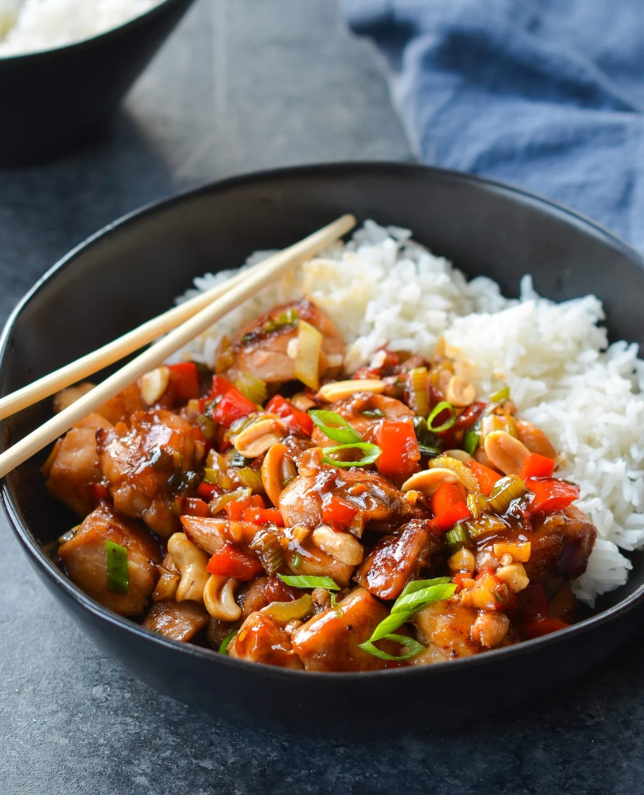

Pao Chicken

Ingredients
- 500g chicken breast
- 2 tbsp soy sauce
- 1 tbsp rice vinegar
- 1 tbsp sugar
- 1/4 cup peanuts
- 2 dried chilies
- 2 cloves garlic, minced
Preparation Time
30 minutes
Instructions
-
Cut chicken into bite-sized pieces and marinate with soy sauce, rice
vinegar, and sugar.
- Heat oil in a pan and stir-fry garlic and chilies.
- Add chicken and cook until browned.
- Toss in peanuts and cook for another 2-3 minutes.
- Serve hot with steamed rice.
Back to Chinese Cuisine